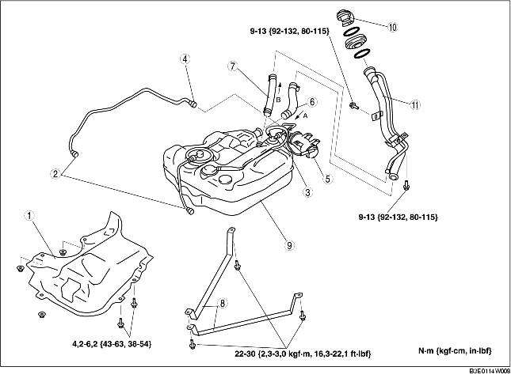

DEPOSE/REPOSE DE RESERVOIR DE CARBURANT [ZJ, Z6]
B3E011442110W01
-
Avertissement
-
• Réparer un réservoir contenant du carburant est dangereux. Des blessures graves, voire mortelles, peuvent être causées par le feu ou l'explosion. Toujours nettoyer soigneusement le réservoir de carburant à la vapeur avant de le réparer.
1. Garer le véhicule sur une surface plane.
2. Respecter les 'PRECAUTIONS A PRENDRE AVANT L'ENTRETIEN' avant d'effectuer toute opération de travail, afin d'éviter que du carburant ne s'écoule du système d'alimentation en carburant. (voir la section PRECAUTIONS A PRENDRE AVANT L'ENTRETIEN [ZJ, Z6, LF].)
-
Avertissement
-
• Une personne chargée d'électricité statique peut provoquer un feu ou une explosion, et entraîner la mort ou des blessures graves. Avant d'évacuer le carburant, s'assurer de décharger toute l'électricité statique en touchant un véhicule.
3. Purger le carburant se trouvant dans le réservoir de carburant en suivant la procédure ci-après :
-
(1) Débrancher le connecteur de déblocage rapide (dans le compartiment moteur). (Voir la section DEPOSE/REPOSE DE CONNECTEUR DE DEBLOCAGE RAPIDE [ZJ, Z6, LF]..)
-
(2) Attacher un long flexible au tuyau de carburant débranché, et évacuer le carburant dans un récipient approprié.
-
(3) Brancher le WDS ou équivalent sur le DLC-2.

-
(4) Positionner le contacteur d'allumage sur ON.
-
(5) À l'aide de la fonction de simulation 'FP', démarrer la pompe à carburant.
-
Attention
-
• La pompe à carburant peut fonctionner incorrectement si on la met en marche sans qu'il y ait présence de carburant dans le réservoir (la pompe à carburant tourne à vide). Contrôler constamment la quantité de carburant évacuée, et arrêter immédiatement toute opération de la pompe lorsque presque tout le carburant a été évacué.
-
(6) Lorsque presque tout le carburant est évacué du flexible, positionner le contacteur d'allumage sur LOCK.
-
(7) Débrancher le câble négatif de la batterie.
4. Déposer le coussin de siège arrière. (voir la section DÉPOSE/REPOSE DE SIÈGE ARRIÈRE.)
5. Déposer le couvercle de l'orifice d'entretien.
6. Débrancher le connecteur de l'unité de pompe à carburant.
7. Déposer le protecteur de l'absorbeur de vapeurs de carburant. (voir la section DEPOSE/REPOSE D'ABSORBEUR DE VAPEURS DE CARBURANT [ZJ, Z6, LF].)
8. Abaisser le silencieux principal de façon à pouvoir déposer l'isolateur. (voir la section DEPOSE/REPOSE DE SYSTEME D'ECHAPPEMENT [ZJ, Z6].) (voir la section DEPOSE/REPOSE DE SYSTEME D'ECHAPPEMENT [LF].)
9. Déposer le cache inférieur arrière (gauche).
10. Déposer les différents éléments selon l'ordre indiqué dans le tableau.
11. Pour la repose, suivre l'ordre inverse de la dépose.
12. Inspecter toutes les pièces en respectant les 'PRECAUTIONS A PRENDRE APRES L'ENTRETIEN'. (voir la section PRECAUTIONS A PRENDRE APRES L'ENTRETIEN [ZJ, Z6, LF].)

.
|
1
|
Isolateur
|
|
2
|
Connecteur de déblocage rapide (avant de réservoir de carburant)
|
|
3
|
Connecteur de déblocage rapide (sur la soupape de renversement)
|
|
4
|
Connecteur de déblocage rapide (sur l'absorbeur de vapeurs de carburant, côté électrovanne de purge)
|
|
5
|
Absorbeur de vapeurs de carburant
|
|
6
|
Flexible de raccord
|
|
7
|
Flexible de reniflard
|
|
8
|
Sangle
|
|
9
|
Réservoir de carburant
|
|
10
|
Bouchon de réservoir de carburant
|
|
11
|
Tuyau de réservoir de carburant
|
Note sur la dépose du tuyau de réservoir de carburant
1. Déposer le pneu arrière (droite).
2. Déposer le garde-boue arrière (droite).
3. Soutenir la barre transversale arrière à l'aide d'un cric pour transmission.
4. Enlever les boulons inférieurs d'amortisseur arrière (droite). (voir la section DEPOSE/REPOSE D'AMORTISSEUR ARRIERE.)
5. Desserrer les écrous de fixation de la barre transversale (6 endroits), et abaisser la barre transversale arrière de 30 mm {1,2 in}. (voir la section DEPOSE/REPOSE DE BARRE TRANSVERSALE ARRIERE.)
6. Déposer le tuyau de réservoir de carburant.
Note sur la repose de flexible de raccord
1. Installer le flexible de raccord et le collier, comme indiqué dans l'illustration.
Note sur la repose de flexible de reniflard
1. Reposer le flexible de reniflard et le collier, comme indiqué dans l'illustration.